Contents
These are the first end-to-end numerical results of the EDT package on the MoS₂ sulfur vacancy (primitive NSCF, 150 bands, $12\times12$ $k$-grid; 11-band valence active manifold; defect potential from the $V_d/V_p$ cubes, vacuum-aligned). They cover three milestones: the full downfolded-potential block $\tilde V=M+\Sigma$ (P3), the active-space $T$-matrix $T_{PP}=[1-\tilde V G^A]^{-1}\tilde V$ (P5-a), and the Wannier / Koster–Slater locality study (P5-b). All matrix elements are validated against EDI's first-Born kernels; no raw data is published — only the summary tables and figures below.
Reference energy $\omega_0=-1.0941$ eV (valence-band maximum), Sternheimer broadening $\eta=0.05$ eV, active window $[-11.74,-1.04]$ eV, $N_k=144$.
1. The downfolded potential block $\tilde V$ (P3)
The rest-space (distant-band) dressing is folded into an effective active-space potential
assembled over the full BZ with the $1/N_k$ measure. The full $1584\times1584$ block ($11$ bands $\times\,144$ $k$) was computed by a pool-parallel $k'$-sum (1 wholenode node, 36 MPI ranks = 36 pools, 2 h 11 m), each rank owning the full $G$-grid so h_psi runs natively at its pool-local channel $k'$.
Validation (all pass):
| check | result | what it confirms |
|---|---|---|
| Born limit (T1) | source ket $=$ EDI $M$ to $2.3\times10^{-13}$ Ry | $\Delta V$-as-ket (local + KB nonlocal) exact |
| per-rank $H_0$ gate | $\langle\psi|H_0|\psi\rangle=\varepsilon$ to $6.0\times10^{-10}$ eV (all ranks) | Sternheimer operator setup correct |
| Hermiticity | $\lVert\tilde V-\tilde V^\dagger\rVert=9\times10^{-12}$ (pre-symmetrization) | $M,\Sigma$ independently Hermitian $\Rightarrow$ assembly correct |
| in-situ cross-check | MPI block $=$ single-rank diagonal to 6 digits | cross-pool MPI assembly correct |
Physics — beyond-Born, moderate rest dressing. At the VBM ($K$, band 13): $M_{nn}=+0.246$, $\Sigma_{nn}=-0.134$, $\tilde V_{nn}=+0.112$ Ry — the rest dressing is about half of, and opposite in sign to, the bare Born coupling. Over the whole manifold:
| quantity | value | reading |
|---|---|---|
| $\lVert M\rVert_F,\ \lVert\Sigma\rVert_F,\ \lVert\tilde V\rVert_F$ | $367,\ 242,\ 143$ Ry | $\lVert\Sigma\rVert<\lVert M\rVert$; $\tilde V\sim0.4\,M$ |
| $\lVert\Sigma\rVert/\lVert M\rVert$ | $0.66$ | rest dressing is a sizeable fraction of first Born |
| states with $|\Sigma_{nn}|>|M_{nn}|$ | $14/1584$ $(1\%)$ | only a few states strongly dressed |
| $\lVert\tilde V_{\rm offdiag}\rVert/\lVert\tilde V_{\rm diag}\rVert$ | $16.8$ | scattering is overwhelmingly $k$-changing |
The rest dressing screens the bare defect potential: the downfolded $\tilde V$ is $\sim2.6\times$ weaker in norm than $M$. First-Born (EDI) therefore overestimates the coupling here — the regime that motivates the $T$-matrix.
The screening is anisotropic in $k$-space. Because the bare $M$, the partial $T$-matrix $\tilde V$, and the full $T_{PP}$ are all localized in the Wannier basis, each can be Wannier-interpolated to a fine grid (the band-projection uses $H_W=U^\dagger E U$ from the same gauge as the matrix elements, so the round-trip is exact on the coarse grid). Fixing the source at the high-symmetry $K$ point on the VBM (band 13) (intraband, on-shell), the three amplitudes over a $48\times48$ final-$k_f$ grid are:
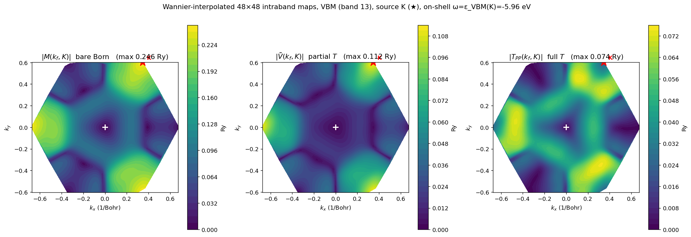
Figure 1. Wannier-interpolated ($48\times48$) intraband scattering from the source $K$ (★) on the VBM (band 13), on-shell at $\omega=\varepsilon_{\rm VBM}(K)=-5.96$ eV (Cartesian $k$, folded to the 1st BZ; + = Γ; colour = magnitude in Ry). Left bare $|M(k_f,K)|$ peaks at the forward channel $K$ ($0.246$ Ry). Middle partial $T$-matrix $|\tilde V|=|M+\Sigma|$: the rest dressing cuts the forward coupling $\sim2.2\times$, to $0.112$ Ry (max $0.112$). Right full $T$-matrix $|T_{PP}|=\bigl|[1-\tilde V G^A]^{-1}\tilde V\bigr|$: the active resummation reduces the forward channel further to $0.026$ Ry (max $0.074$) — net $\sim9\times$ below the bare coupling $M$. The interpolation is validated by the exact round-trip at $k_f=K$, which reproduces the raw block ($|M|=0.246$, $|\tilde V|=0.112$ Ry).
2. Active-space $T$-matrix $T_{PP}$ (P5-a)
With $\tilde V$ in hand, the active multiple scattering is resummed by one small inversion on the coarse grid,
where the BZ measure $1/N_k$ lives in $G^A$ (the same $1/N_k$ that appears in $\Sigma$ — see the $k'$-normalization note).
Validation (code correct): as the coupling is scaled to zero ($\lambda\to0$) or $\eta\to\infty$ (so $G^A\to0$), the solver returns $T\to\tilde V$ to $\sim10^{-4}$.
Result — rest-space reshapes the resummed amplitude. Both $T_M$ and $T_{PP}$ are full active $T$-matrices (the resummation is the same); they differ only by whether rest-space (high-energy, out-of-window) scattering is folded into the input ($M$ vs $\tilde V=M+\Sigma$). Evaluated at the VBM (band 13), where $G^A$ is resonant with the band:
| input | resummed $\lVert T\rVert_F$ | vs input |
|---|---|---|
| $M$ — no rest-space | $\lVert T_M\rVert=70$ Ry | $\times0.19$ |
| $\tilde V=M+\Sigma$ — with rest-space | $\lVert T_{PP}\rVert=177$ Ry | $\times1.23$ |
At the band-edge resonance the resummation is input-sensitive: it damps the bare $M$ ($\times0.19$) but mildly enhances the rest-dressed $\tilde V$ ($\times1.23$), so the with-rest-space operator is $\sim2.5\times$ larger in norm ($177$ vs $70$ Ry). Yet the on-shell forward channel is screened by rest-space (§3) — so the rest dressing redistributes scattering from forward into $k$-changing channels rather than uniformly scaling it. A scan over $\omega$ gives $\lVert T_{PP}\rVert/\lVert\tilde V\rVert\approx1$ across most of the window, rising to $1.23$ at the VBM.
3. Energy dependence of the full $T$-matrix
$T_{PP}$ carries a second energy — the $\omega$ in the active resolvent $G^A_a(\omega)=(1/N_k)/(\omega-\varepsilon_a+i\eta)$ — and it behaves quite differently from the $\omega_0$ that dresses $\tilde V$. For $\tilde V=M+\Sigma(\omega_0)$ the rest manifold is gapped from $\omega_0$ (no poles, real, $\omega$-insensitive); for $T_{PP}(\omega)$ the active manifold sits on $\omega$, so $G^A(\omega)$ has a pole at every active $\varepsilon_a$ and $T_{PP}$ is genuinely resonant, with $\eta=0.05$ eV setting the width. This is where $\eta$ matters.
The whole $\omega$-dependence has a closed form. With $z=\omega+i\eta$ and the $\omega$-independent Hermitian effective Hamiltonian $H_{\rm eff}=E+\frac{1}{N_k}\tilde V$,
so one diagonalization gives every $\omega$ at once and the poles $\lambda_n$ are the $T$-matrix resonances (the active manifold dressed by the defect). For the diagonal of the VBM state $a_K=(K,\text{band }13)$,
which reproduces a direct $1584\times1584$ solve to $2.4\times10^{-15}$.
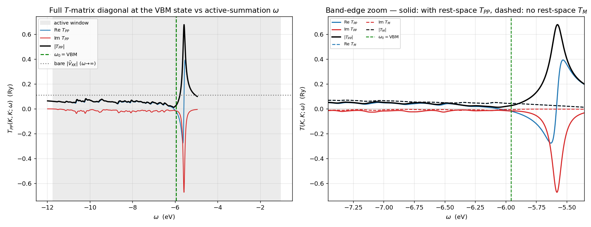
Figure 2. Diagonal $T_{PP}(K,K;\omega)$ at the VBM (band 13; $k_i=k_f=K$) vs the active-summation energy $\omega$. Left: Re, Im, $|\cdot|$ across the active window; far from resonances $|T_{PP}|\to$ the bare $|\tilde V_{KK}|=0.112$ Ry ($G^A\to0$). Right (band-edge zoom): Re (blue), Im (red), $|\cdot|$ (black) for both inputs — solid $T_{PP}$ (with rest-space), dashed $T_M$ (no rest-space). A sharp defect resonance at $\omega\approx-5.6$ eV — $\sim0.35$ eV above the VBM, i.e. an in-gap S-vacancy hole level pushed into the gap by $\frac{1}{N_k}\tilde V$; Re disperses through zero, Im dips negative (the absorptive rate). The on-shell point $\omega_0=$ VBM (green) sits on its rising edge: $T_{PP}(K,K)=-0.020-0.017\,i$ Ry, $|T_{PP}|=0.026$ — small at the band edge ($\mathrm{DOS}\to0$). Here rest-space clearly reduces the diagonal ($|T_{PP}|=0.026$ vs $|T_M|=0.043$). The closed form is validated against a direct $1584^2$ solve to $2.4\times10^{-15}$.
Figure 2 fixes $k=K$ and sweeps $\omega$; the complementary cut fixes each carrier on-shell ($\omega=\varepsilon_{\rm VBM}(k)$) and sweeps $k$ along Γ–M–K — the $k$-resolved scattering that the transport integral actually samples:
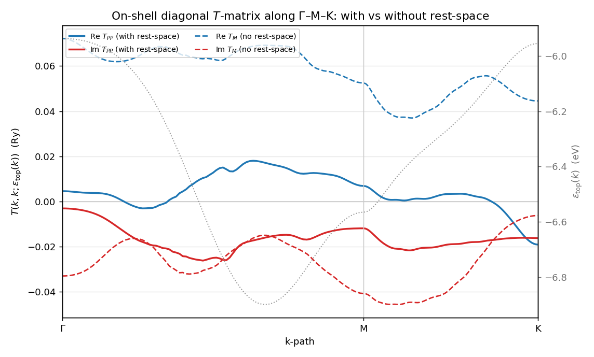
Figure 3. On-shell diagonal $T(k,k;\varepsilon_{\rm VBM}(k))$ along Γ–M–K on the VBM (band 13), Wannier-interpolated. Re (blue), Im (red); solid $=T_{PP}$ (with rest-space), dashed $=T_M$ (no rest-space); gray dotted $=\varepsilon_{\rm VBM}(k)$ (right axis). The curve is smooth — band 13 has no crossings (fenced by the $1.68$ eV gap above and $0.28$ eV below), unlike the earlier band-17 attempt that jumped at conduction-band crossings. Rest-space strongly screens the on-shell scattering: solid $T_{PP}$ sits well below dashed $T_M$ everywhere — by $\sim15\times$ at Γ ($|T_M|=0.079$ vs $|T_{PP}|=0.005$) and $\sim2\times$ at $K$ ($0.045$ vs $0.025$). The on-shell rate $|\mathrm{Im}\,T_{PP}|$ is small ($\lesssim0.02$ Ry) — the VBM is a band edge ($\mathrm{DOS}\to0$). So for the actual VBM hole the high-energy (rest) states are a large effect on the scattering.
Both cuts combine into a single 2D map — the diagonal $T(nk,\omega)$ over the whole $(k,\omega)$ plane — which is the electron-defect self-energy up to the defect concentration, $\Sigma_{\rm e\text{-}def}(nk,\omega)=n_d\,T_{nk,nk}(\omega)$:
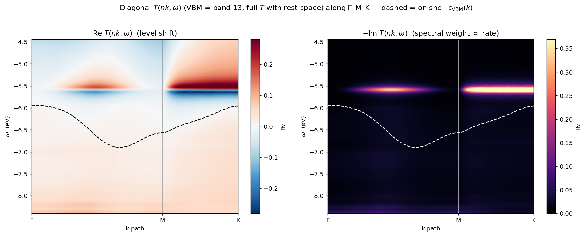
Figure 4. Diagonal $T(nk,\omega)$ on the VBM (band 13) along Γ–M–K vs energy $\omega\in[-8.4,-4.4]$ eV, full $T$ (with rest-space). Left $\mathrm{Re}\,T$ (level shift, diverging); right $-\mathrm{Im}\,T\ge0$ (spectral weight $\propto$ rate, sequential); dashed $=$ on-shell $\varepsilon_{\rm VBM}(k)$. The weight concentrates in a flat, nearly $k$-independent band at $\omega\approx-5.6$ eV — the in-gap S-vacancy defect resonance $\sim0.35$ eV above the VBM (a localized level $\Rightarrow$ flat in $k$); the VBM band sits just below it, so the on-shell rate is small. Since $\Sigma_{\rm e\text{-}def}(nk,\omega)=n_d\,T(nk,\omega)$, this map $\times\,n_d$ is the electron-defect self-energy. (Re $\in[-0.29,0.39]$, $-\mathrm{Im}\le0.64$ Ry.)
For comparison, the same map without rest-space (bare $M$, $T_M$) on the VBM (band 13):
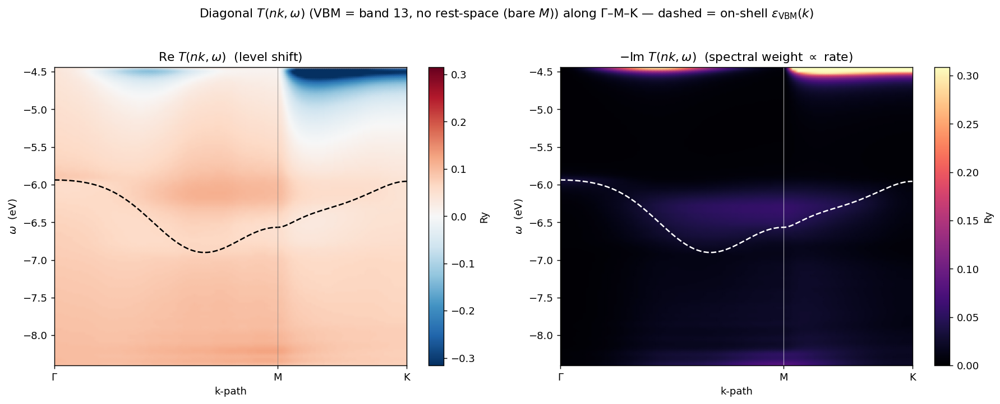
Figure 5. Same as Figure 4 but without rest-space (bare $M$, $T_M$). The bare $M$ spreads much more $-\mathrm{Im}$ weight onto the band itself and the interior; the rest dressing (Figure 4) screens most of it and concentrates the weight at the in-gap defect resonance — the strong, $k$-dependent screening already seen on-shell in Figure 3. On-shell at the VBM ($K$): $T_M=+0.045-0.007i$ Ry. (Since $M$ is $\omega_0$-independent this map needed no recomputation; Figure 4 used the block recomputed at $\omega_0=\varepsilon_{\rm VBM}$.)
The observable — e-defect self-energy and spectral function. With the diagonal $T$-matrix in hand, assigning a defect concentration $n_d$ (single-site/dilute limit) gives the electron-defect self-energy, and one Dyson step gives the spectral function:
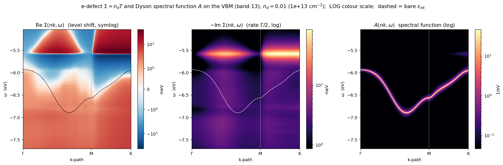
Figure 6. Self-energy $\Sigma=n_d\,T$ and Dyson spectral function $A(nk,\omega)$ on the VBM (band 13) along Γ–M–K, dilute limit $n_d=1\%$ ($\approx1.2\times10^{13}$ cm$^{-2}$); dashed $=$ bare $\varepsilon_{nk}$; log colour scale (symlog for the signed $\mathrm{Re}\,\Sigma$), which exposes the band tails and faint in-gap weight. Left $\mathrm{Re}\,\Sigma$ (level shift). Middle $-\mathrm{Im}\,\Sigma$ (rate $=\Gamma/2$): peaks at $92$ meV at the in-gap defect resonance ($\omega\approx-5.6$ eV) but is small on the band. Right $A(nk,\omega)$: a sharp quasiparticle band (peak $\sim620$/eV) barely shifted from $\varepsilon_{nk}$ — the VBM hole stays well-defined, since the defect resonance sits $\sim0.35$ eV above the VBM (in the gap) and scatters band-edge holes only weakly (on-shell $-\mathrm{Im}\,\Sigma\sim$ a few meV).
Raising the concentration $5\times$ to a heavily-defected $n_d=5\%$ broadens the band — $A$ and $\Gamma$ scale $\propto n_d$:
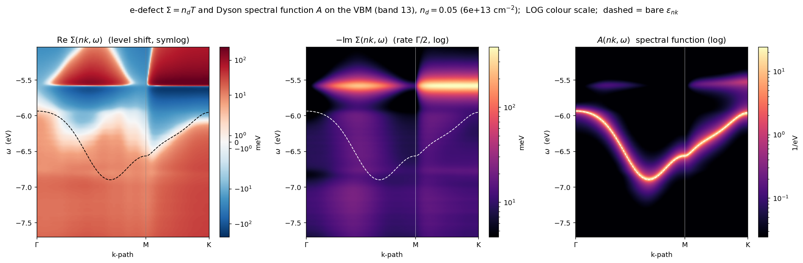
Figure 7. Same as Figure 6 but at $n_d=5\%$ ($\approx5.8\times10^{13}$ cm$^{-2}$). The self-energy is $5\times$ larger — $-\mathrm{Im}\,\Sigma$ peaks $459$ meV at the resonance and $\mathrm{Re}\,\Sigma$ reaches $\pm200$ meV — and the quasiparticle band is now visibly broadened (peak $A\sim103$/eV vs $620$; on-shell linewidth $\sim10$–$30$ meV), though it stays a recognizable, renormalized quasiparticle. The $459$ meV rate still lives at the resonance energy, off the band.
Without rest-space, for comparison. Redoing the maps with the bare $M$ as input ($T_M$, no rest-space) isolates what the high-energy states contribute:
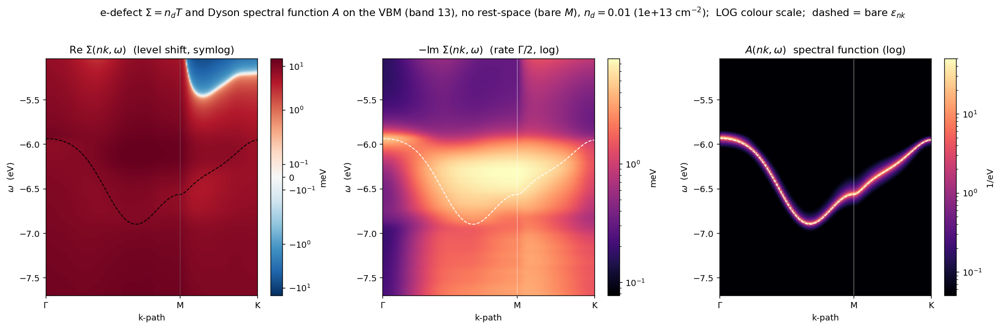
Figure 8. As Figure 6 ($n_d=1\%$) but without rest-space (bare $M$). Now $-\mathrm{Im}\,\Sigma$ tracks the band (on-shell scattering by the bare potential; max only $7.9$ meV, vs $92$ with rest-space) and there is no in-gap resonance — the strong defect level in Figs 6–7 is entirely a product of the rest dressing $\Sigma$. The quasiparticle band is correspondingly broader ($A$ peak $\sim347$/eV vs $620$): rest-space screens the on-band scattering and sharpens the quasiparticle.
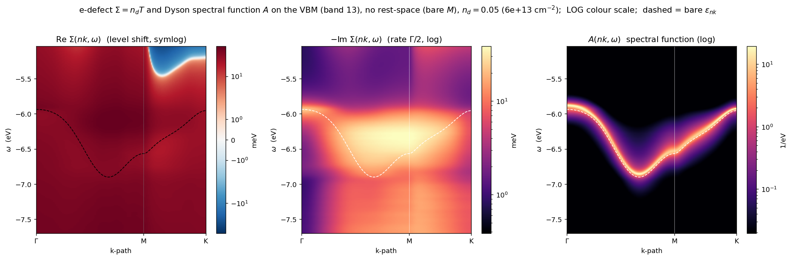
Figure 9. Same at $n_d=5\%$ (no rest-space; $-\mathrm{Im}\,\Sigma$ max $39.7$ meV, vs $459$ with rest-space). Comparing Figs 8–9 (no rest-space) with Figs 6–7 (with): the rest dressing redistributes the scattering — it pulls weight off the band into the in-gap defect resonance and sharpens the quasiparticle — so the high-energy states reshape the energy structure of $\Sigma(nk, \omega)$, not just its overall size.
The complete (multiband) spectral function. Figs 6–9 show only band 13; the complete $A(k,\omega)$ sums every active band through the full band-space Dyson
with $H_0=\mathrm{diag}(\varepsilon_{nk})$ and the matrix self-energy (band-mixing off-diagonals included):
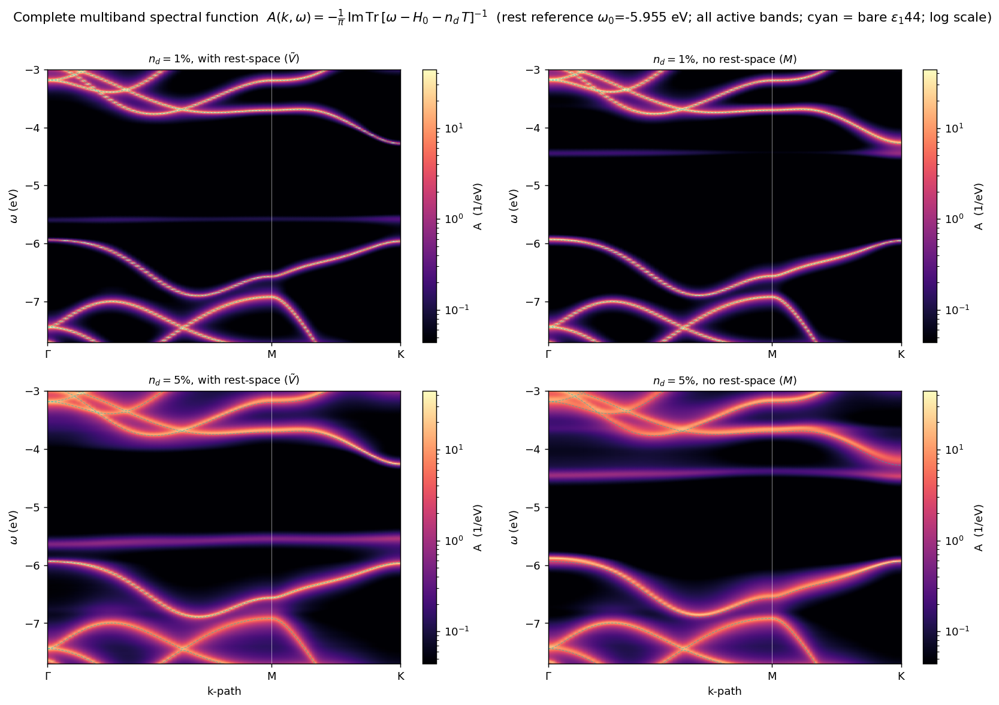
Figure 10. Complete multiband spectral function $A(k,\omega)$ along Γ–M–K, window extended upward to $-3.0$ eV, well into the conduction manifold — valence band 13 below ($\varepsilon_{\rm VBM}=-5.94$ eV), conduction bands 14–17 above ($\varepsilon_{\rm CBM}=-4.28$ eV), separated by the $1.66$ eV gap. Rows $n_d=1\%$ (top), $5\%$ (bottom); columns with rest-space ($\tilde V$, left) and without ($M$, right); cyan dashed $=$ bare $\varepsilon_{nk}$; log scale. The S-vacancy defect level is now resolved in the gap. With rest-space (left) a distinct, nearly dispersionless resonance sits at $\approx-5.6$ eV — $0.34$ eV above the VBM, well clear of both band edges (k-averaged $A\approx0.4$/eV at $n_d=5\%$, weaker but present at $1\%$). Without rest-space (right) the gap is empty between the band-edge tails — no mid-gap state at all. The defect level is therefore created entirely by the rest dressing ($\tilde V=M+\Sigma$; the high-energy, out-of-window scattering folded into the input): the bare active potential $M$ produces no in-gap state. This is the same resonance seen in the single-band Figs 6–9, now isolated in the widened window; away from the gap the quasiparticles track the bare bands in both columns.
Does a second rest-space reference change anything? Recomputing the block at $\omega_0'=-4.8$ eV (near where the $e$ level should sit) instead of the VBM gives a second spectral function to compare against Figure 10:
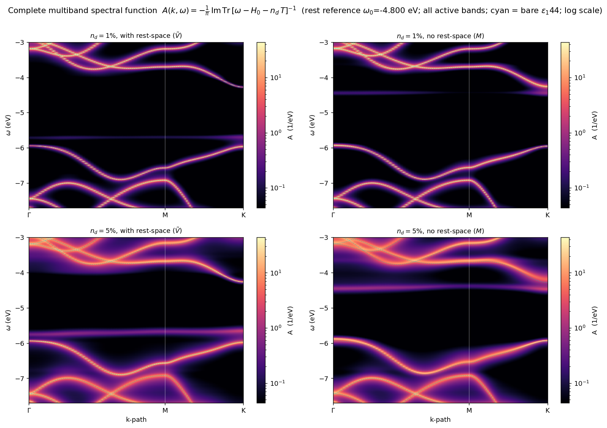
Figure 11. The same complete multiband spectral function as Figure 10, but built from the second-reference egap block ($\omega_0'=-4.8$ eV — near where the $e$ defect level should sit) rather than the VBM block ($\omega_0=-5.955$ eV); identical window and Dyson construction. It is essentially unchanged from Figure 10: the in-gap $a_1$-like resonance near $-5.6$ eV merely weakens and shifts a little, and no new in-gap state appears. Quantitatively the upper-gap ($-5.0$ to $-4.4$ eV) integrated weight equals Figure 10's (16 vs 16; with rest-space, $n_d=5\%$). So moving the rest-space reference to the $e$ energy does not recover the $e$ doublet — confirming (benchmark below) that the level's absence is structural, not a matter of which reference energy is chosen.
Does the potential alignment change anything? The blocks above align $\Delta V=V_d-V_p$ to the vacuum level. Recomputing with no alignment (pot_align='none', the raw $V_d-V_p$) gives:
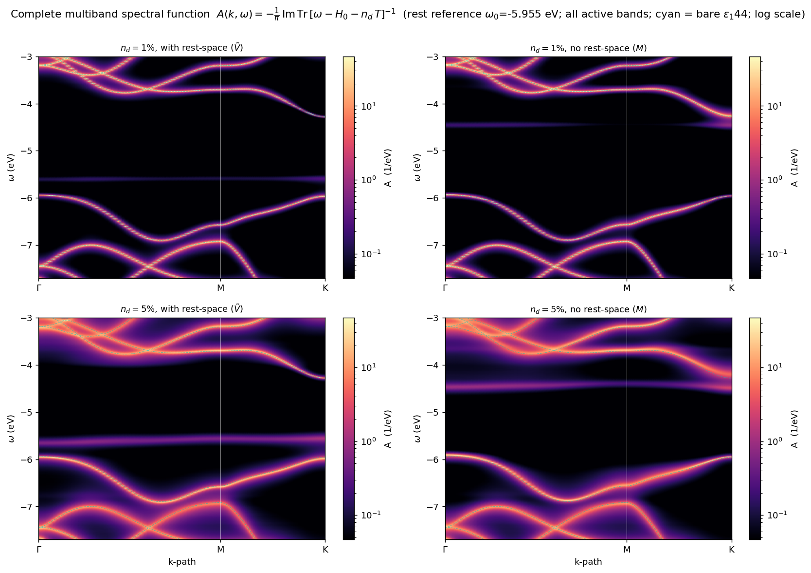
Figure 12. Multiband spectral function from the un-aligned block (pot_align='none', same $\omega_0=-5.955$ eV and window as Figure 10). It is essentially identical to Figure 10. Dropping the alignment shifts the bare $M$ diagonal by a uniform $-0.42$ eV (the G$=0$ component of $\Delta V$, $\mathrm{std}=0$), but in the dilute-defect Dyson $H_{\rm eff}=E+\tilde V/N_k$ that constant is divided by $N_k=144\to\sim3$ meV, and the genuinely non-constant (off-diagonal) part differs by only $0.5\%$ of $\lVert M\rVert$. The result: the a$_1$-like resonance stays at $-5.57$ eV ($\pm0.02$) and the $e$ doublet stays absent. So the alignment is not the cause of the missing $e$ — the G$=0$ offset washes out in the dilute limit, consistent with the structural diagnosis.
Benchmark against the supercell: where do the defect levels sit?
How faithful is that resonance? The direct check is the S-vacancy supercell itself — a $6\times6$ MoS$_2$ cell (107 atoms, one S removed), whose Γ-point Kohn–Sham levels are the defect levels. Aligning the two pictures on a common VBM/CBM:
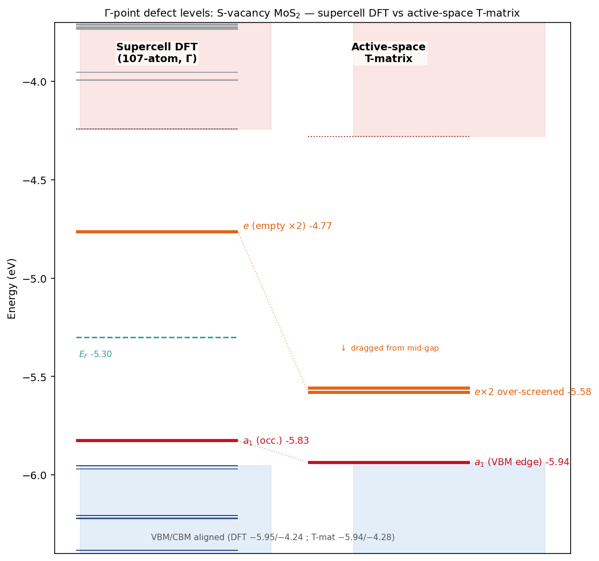
Figure 13. Γ-point defect levels of the S-vacancy — supercell DFT (left) vs the active-space $T$-matrix (right), VBM/CBM aligned. DFT gives the textbook $C_{3v}$ pattern of the three Mo dangling bonds: an $a_1$ singlet (HOMO, occupied) at $-5.83$ eV, only $+0.13$ eV above the VBM, and an $e$ doublet (LUMO, empty) at $-4.77$ eV, $+1.19$ eV above the VBM (deep in the gap); the Fermi level $E_F=-5.30$ eV lies between them; bulk gap $1.71$ eV. The active-space $T$-matrix with the 2nd-order rest dressing $\tilde V=M+\Sigma$ (right) reproduces the band edges (gap $1.66$ eV) and keeps the $a_1$ pinned to the VBM edge ($-5.94$, $+0.0005$), but the $e$ doublet is over-screened: instead of sitting mid-gap it is dragged down to $-5.58$ ($+0.36$), nearly onto the VBM. So the rest dressing does not omit the $e$ — it puts it at the wrong energy. (That $-5.6$ feature, which we first read as a single $a_1$-like resonance, is in fact the doubly-degenerate $e$, over-bound by $\sim1.1$ eV, with the true $a_1$ left at the VBM.) The next two figures pin the cause: the bare $M$ already binds the $e$ in the gap — at 11 or 21 bands — and it is the 2nd-order Born $\Sigma$ that over-screens it.
Resolved: an explicit 21-band $T$-matrix recovers the $e$ doublet
That diagnosis has a direct test: keep the conduction manifold explicitly instead of downfolding it. We did exactly that, in the most stripped-down form possible — no Wannier, no downfolding, no rest dressing. On the full $12\times12$ grid we built the bare Bloch matrix $M_{nk,mk'}=\langle nk|\Delta V|mk'\rangle$ over $\approx21$ bands per $k$ (NSCF bands $7$–$28$, spanning the window $[-11.8,+6]$ eV about the gap) — a single $3002\times3002$ matrix — and read the defect levels straight off it as the in-gap eigenvalues of $H_{\rm eff}=\mathrm{diag}(\varepsilon_{nk})+M/N_k$. There is no self-energy here ($\Sigma\equiv0$, so $\tilde V=M$); the DOS follows from the same matrix via $T=[1-VG^A]^{-1}V$ with $V=M/N_k$.
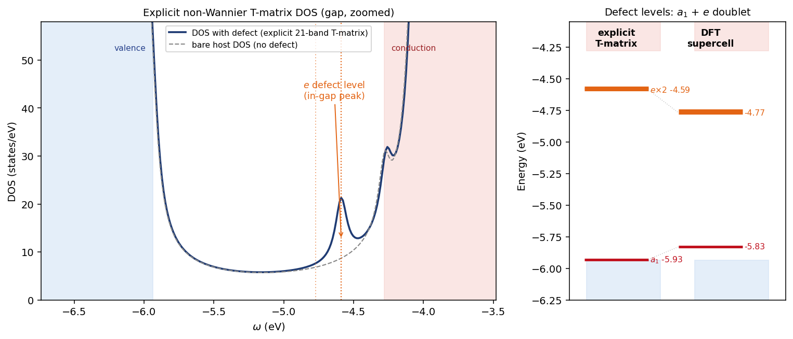
Figure 14. The explicit 21-band $T$-matrix recovers both defect levels. Left: density of states in the gap (zoomed) — the bare host (grey dashed) is empty between the band edges, while the $T$-matrix DOS (blue) carries a distinct in-gap peak ($12.6$ states/eV) at $-4.59$ eV: the $e$ state. Right: in-gap eigenvalues of $H_{\rm eff}=\mathrm{diag}(\varepsilon)+M/N_k$ vs the DFT supercell, VBM/CBM aligned. The explicit calculation gives an $a_1$ singlet at $-5.93$ eV (at the VBM edge, $+0.01$) and a doubly-degenerate $e$ at $-4.59$ eV ($+1.35$ above the VBM) — the full $C_{3v}$ $a_1\oplus e$ pattern of the three Mo dangling bonds, matching DFT ($a_1$ $-5.83/+0.13$; $e$ $-4.77/+1.19$) to $\lesssim0.18$ eV. The two-fold degeneracy of the $e$ ($-4.588$ twice) comes out automatically. So the shortfall in Figure 13 is the 2nd-order (Born) rest dressing alone — not the active-space size or the downfolding: the bare $M$ already binds the $e$ even in the 11-band window, and the larger explicit space only refines its position (Figure 15 isolates this). The $1/N_k$ normalization is essential — dropping it ($H=\mathrm{diag}(\varepsilon)+M$) yields $69$ spurious "in-gap" eigenvalues instead of three.
This is the cleanest confirmation that the framework is sound and the earlier shortfall was an approximation, not a wall: the active-space + Born-$\Sigma$ pipeline over-screened the $e$ (Figure 15); the explicit Bloch inversion — $\sim\!46$ min on one node for $M$, then a $3002\times3002$ solve — pays the $\mathcal{O}(N_b^2)$ price and gets it back at the right energy. The remaining $\lesssim0.18$ eV offsets (the $e$ a touch high, the $a_1$ pinned to the VBM edge) are the finite $12\times12$ sampling and the 21-band truncation — the truncation part now confirmed and removed by the band-convergence study (Figure 16): at 60 explicit bands the $e$ lands on the DFT value.
Pinpointing the cause: bare $M$ agrees, the 2nd-order dressing over-screens
The defect-induced $\Delta\mathrm{DOS}=-\tfrac1\pi\,\mathrm{Im}\,\mathrm{Tr}\,[G^A T G^A]$ makes the mechanism unmistakable. The bare host has no states in the gap, so every in-gap feature of $\Delta\mathrm{DOS}$ is a defect level; computed three ways on one common grid and broadening:
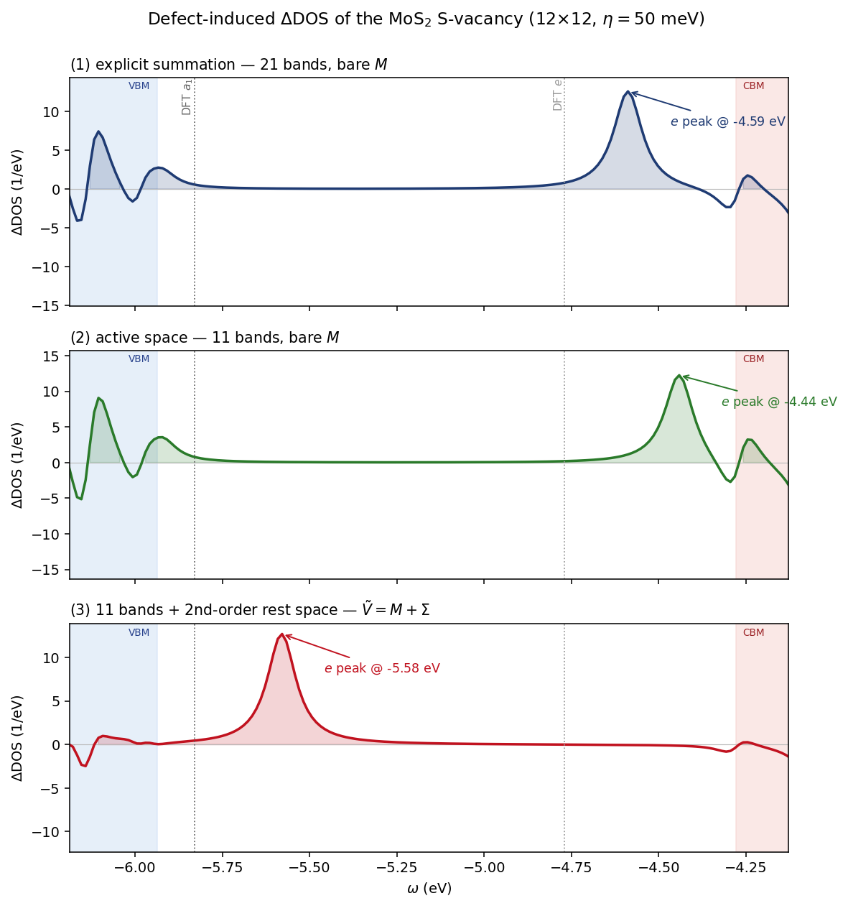
Figure 15. Defect-induced $\Delta\mathrm{DOS}$ of the S-vacancy, three treatments on one grid ($\eta=50$ meV). (1) explicit 21-band (bare $M$) and (2) active-space 11-band (bare $M$) are nearly identical — a tall, clean $e$ peak deep in the gap (at $-4.59$ / $-4.44$ eV, i.e. $+1.35$ / $+1.50$ above the VBM), with the shallow $a_1$ blended into the VBM edge. Neither the band count nor the Wannier/downfolding changes the bare-$M$ answer. (3) 11 bands $+$ 2nd-order rest space ($\tilde V=M+\Sigma$): the $e$ peak collapses $\sim1.1$ eV down to $-5.58$ eV ($+0.36$), nearly onto the VBM, leaving the mid-gap flat. That is the whole story of the "missing" $e$ — it is not omitted, it is dragged to the wrong energy by the Born self-energy. The negative dips at the band edges are the compensating spectral-weight depletion ($\int\Delta\mathrm{DOS}\,d\omega\simeq0$; Friedel/Levinson).
The lesson is sharp: in this system the 2nd-order (Born) rest dressing is an over-screening, not an improvement — the bare explicit $M$, paying the $\mathcal{O}(N_b^2)$ cost of carrying the conduction bands directly, is the more faithful object. A correct rest dressing here would need to go beyond 2nd order (or use the full frequency-dependent $\Sigma_{\rm rest}(\omega)$), not the static Born $\Sigma(\omega_0)$.
Band convergence: the explicit $e$ converges onto DFT
The last open offset in Figure 14 — the explicit $e$ at $+1.35$ vs DFT's $+1.19$ — was attributed to the 21-band truncation. Widening the explicit window settles it: with $\approx61$ bands per $k$ (window $[-11.8,+21]$ eV, $N_A=8758$, assembled in $1$h$26$m on $2\times18$ ranks) the in-gap eigenvalues of $H_{\rm eff}=\mathrm{diag}(\varepsilon)+M/N_k$ give the $e$ doublet at $-4.731$ eV — $+1.205$ above the VBM, within $15$ meV of the DFT supercell's $+1.19$:
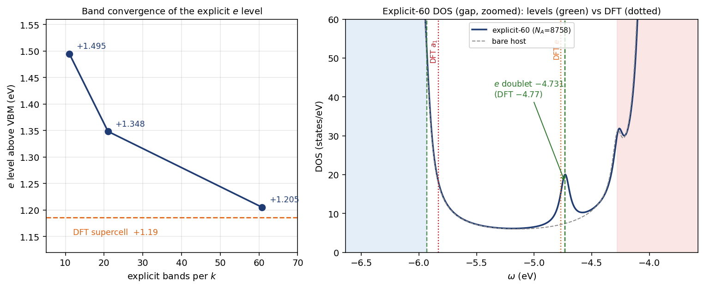
Figure 16. Band convergence of the explicit $T$-matrix. Left: the $e$ level (above VBM) vs the number of explicit bands per $k$: $+1.495$ (11) $\to$ $+1.348$ (21) $\to$ $+1.205$ (61), converging onto the DFT supercell value $+1.19$ (dashed). Right: the explicit-60 DOS in the gap — the $e$ peak (green) sits essentially on the DFT $e$ marker (dotted); the $a_1$ stays a singlet pinned at the VBM edge ($+0.005$; its $+0.13$ DFT offset is the remaining finite-$12\times12$-sampling limitation). The $e$ doublet remains two-fold degenerate to $10^{-4}$ eV at all three band counts. Contributions from yet higher bands fall off as $1/(\varepsilon_r-\varepsilon_e)$ with the remaining bands $>+21$ eV, so the $60\to150$ residual is estimated at $-0.02$ to $-0.04$ eV — the curve is converged at the few-tens-of-meV level.
Two consequences. First, the explicit route is now quantitatively closed: gap-region defect physics ($a_1\oplus e$, degeneracies, and the $e$ position to $\sim15$ meV) is reproduced from primitive-cell matrix elements alone. Second, the acceptance target for the full-order Feshbach dressing tightens: the rest-space Sternheimer implicitly carries all bands, so its converged $e$ must land at $\approx+1.19$–$1.21$ — the band-converged value, not the 21-band $+1.35$.
Full-order rest dressing, realized: the direct-resolvent $\tilde V$ from explicit-60
The explicit-60 matrix contains every block needed for the full-order static-$\omega_0$ Feshbach dressing of the original 11-band active space — no Sternheimer iteration required. With $P=$ bands $7$–$17$ ($N_P{=}1584$), $Q=$ bands $18$–$70$ ($N_Q{=}7174$, the band-converged rest) and $W=M^{(60)}/N_k$,
via one eigendecomposition $E_Q+W_{QQ}=U\Lambda U^\dagger$ (after which any $\omega$ costs one GEMM — the $\omega$-self-consistency is nearly free). The resulting defect levels, treatment by treatment:
| rest treatment ($Q$ = bands 18–70) | $e$ doublet (above VBM) | $a_1$ |
|---|---|---|
| bare $M$ (no rest) | $+1.495$ | $+0.010$ |
| $+\,\Sigma^{(2)}(\omega_0)$ — 2nd order | $+0.732$ | pushed out of the gap |
| $+\,\Sigma^{(2)}{+}\Sigma^{(3)}(\omega_0)$ | $+1.595$ | $+0.023$ |
| $+\,\Sigma_{\rm full}(\omega_0)$ — resummed, static | $+1.223$ | $+0.005$ |
| self-consistent $\omega$, resummed | $\boxed{+1.205}$ | — |
| references | explicit-60 all-band $+1.205$ · DFT $+1.19$ |
Three things are settled at once. (i) The downfolding identity closes exactly: the self-consistent full-order dressing reproduces the explicit-60 all-band diagonalization to the displayed digits ($-4.731$ eV both) — folding bands $18$–$70$ into $\Sigma$ and keeping them explicitly are now verified to be the same physics. (ii) The order-by-order series is divergent and oscillates: 2nd order crashes the $e$ to $+0.73$ (and expels the $a_1$), 3rd order overshoots to $+1.60$, while the per-order ratios grow through one ($r_3{=}0.74,\ r_4{=}0.91,\ r_5{=}1.21$) — only the resummation (resolvent inversion) lands correctly, confirming the ladder-page verdict with this rest as well. (iii) The static reference is mild: $\Sigma_{\rm full}(\omega_0{=}\varepsilon_{\rm VBM})$ alone is already within $20$ meV of the self-consistent answer. (Diagnostics: the $M_{PP}$ block matches the archived 11-band $M$ to $4.6\times10^{-16}$; $\Sigma_{\rm full}$ Hermitian to $10^{-17}$; the $H_{QQ}$ spectrum has no eigenvalue within $5.5$ eV of $\omega_0$, so the static resolvent is well-conditioned.)
The dressed block $\tilde V=M+N_k\Sigma_{\rm full}(\omega_0)$ — the production partially scattered $T$-matrix with full-order rest dressing — feeds the same spectral-function pipeline as Figure 10:
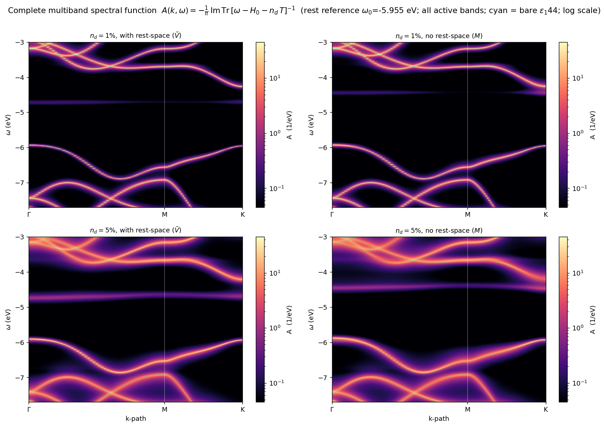
Figure 17. Complete multiband spectral function built from the full-order dressed $\tilde V=M+N_k\Sigma_{\rm full}(\omega_0)$ (same layout, window and $\omega_0$ as Figure 10: rows $n_d=1\%/5\%$, columns with/without rest). The contrast with Figure 10 (2nd-order $\Sigma$) is the whole story of this page in one picture: with the 2nd-order dressing the in-gap resonance hugged the VBM near $-5.6$ eV (the over-screened $e$); with the full-order dressing it sits mid-gap at $\approx-4.7$ eV — the $e$ doublet at its band-converged position ($+1.2$ above the VBM, DFT $+1.19$). The no-rest column (bare $M$, resonance at $-4.44$) is unchanged by construction.
4. Wannier representation and locality (P5-b)
The textbook way to avoid the large $(N_b N_k)$ inversion on fine grids is the Koster–Slater / defect-Green's-function trick: rotate $\tilde V$ to a localized Wannier basis, $\tilde V^W(R',R)=\!\big[U^\dagger(k_f)\,\tilde V(k_f,k_i)\,U(k_i)\big]$ Fourier-transformed, and invert only on the defect's compact support. This requires $\tilde V^W(R',R)$ to be short-ranged — which in turn requires the Wannier rotation $U(k)$ to be in the same Bloch gauge as the $\psi_{nk}$ that build $M$ (exactly the consistency EDI's edbloch2wane enforces by construction).
A gauge mismatch — found and fixed. Our first attempt reused the existing filukk, which had been produced by a separate 17-band Wannier90 run, whereas edt.x computes $\tilde V$ from the 150-band NSCF evc. Different runs carry different per-$k$ Bloch phases (and degenerate-subspace bases), so $U^\dagger M U$ was not smooth. The fingerprint: the electron-index decay of $M^W(R_e;q)$ collapsed at $q=0$ (phase-insensitive) but stayed flat for $q\neq0$ (phase-sensitive) — a per-$k$ gauge mismatch, not a real non-locality. (Band/eigenvalue checks pass either way, since eigenvalues are gauge-free, which is why this hid initially.)
The fix is to re-Wannierize on the 150-band NSCF with the identical Wannier space — same projections (Mo:$d$, S:$p$), same windows, the same 11 valence bands 7–17 (exclude_bands = 1-6,
18-150) — giving a filukk consistent with the evc that build $M$ (its Wannier interpolation reproduces the NSCF bands to $2\times10^{-5}$ eV).
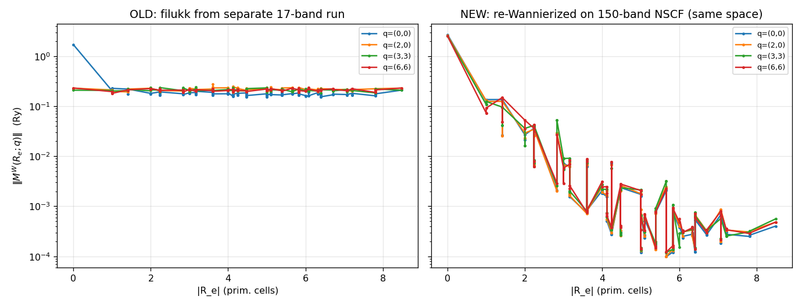
Figure 18. Electron-index decay $\lVert M^W(R_e;q)\rVert$. Left (old filukk, 17-band run): $q\!\neq\!0$ is flat — the gauge mismatch. Right (new filukk, re-Wannierized on the 150-band NSCF): every $q$ now decays together by $\sim10^{3}\times$ over $\sim5$ cells.
With the consistent gauge, $\tilde V^W$ is localized. Wannierizing the downfolded potential $\tilde V=M+\Sigma$ itself (both Bloch indices) gives a short-ranged object: peaked on the defect cell and decaying $\sim250\times$, both as a two-point matrix and in the electron index for every momentum transfer $q$.
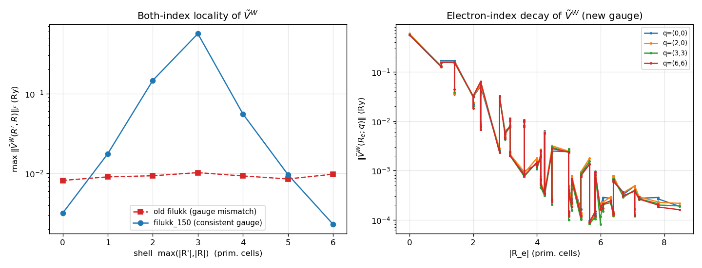
Figure 19. Wannierization of $\tilde V$ and its locality. Left: both-index $\lVert\tilde V^W(R',R)\rVert_F$ by shell $\max(|R'|,|R|)$ — flat with the mismatched gauge (red), but with filukk_150 (blue) it peaks on the defect cell ($\sim3$ cells from the Wannier origin) and decays $\sim250\times$. Right: electron-index $\lVert\tilde V^W(R_e;q)\rVert$ decays $\sim10^{3}\times$ for every $q$ — $\tilde V^W$ is genuinely short-ranged.
A real-space cut makes the localization concrete. The on-site block $\tilde V^W_{ij}(R,R)$ (same cell $R$, an $11\times11$ Wannier matrix) is largest on the defect cell — here $R_d=(3,3)$, dominant orbital $|\tilde V^W_{55}(R_d,R_d)|=0.52$ Ry — and for a fixed pair $(i,j)$ it falls off with the minimum-image distance of $R$ from the defect:
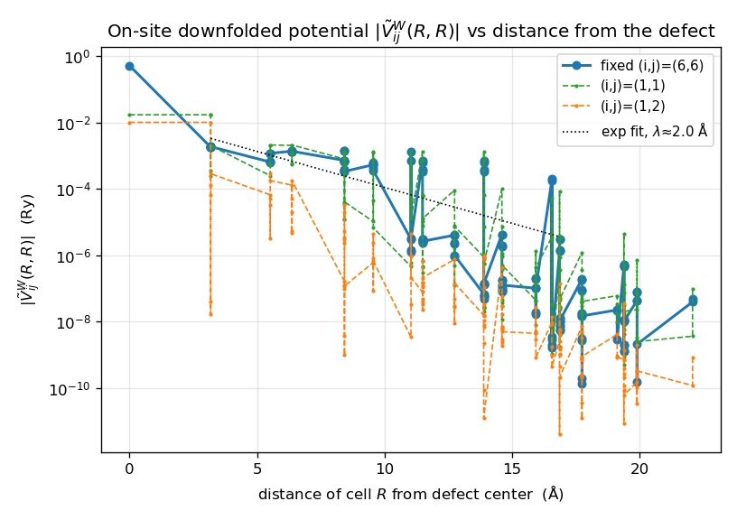
Figure 20. On-site downfolded potential $|\tilde V^W_{ij}(R,R)|$ for a fixed Wannier pair (dominant $i\!=\!j\!=\!6$; $(1,1)$ and $(1,2)$ shown for context) vs the minimum-image distance of cell $R$ from the defect. It drops from $0.52$ Ry on the defect cell to $\sim\!10^{-3}$ Ry one cell ($\sim3.2$ Å) away, with envelope decay length $\lambda\approx2$ Å ($<1$ cell) — the downfolded potential is confined to the defect site.
The localized $\tilde V^W$ is exactly what makes the truncated Koster–Slater inversion $T=[1-\tilde V^W G^A]^{-1}\tilde V^W$ converge quickly:
| $R_{\rm cut}$ | subspace dim | $\lVert T\rVert$ old (mismatched gauge) | $\lVert T\rVert$ new (consistent gauge) |
|---|---|---|---|
| 2 | 275 | 0.057 | 0.057 |
| 3 | 539 | 0.19 | 1.72 |
| 4 | 891 | 0.59 | 2.06 (99.6%) |
| 6 | 1584 | 2.06 | 2.06 |
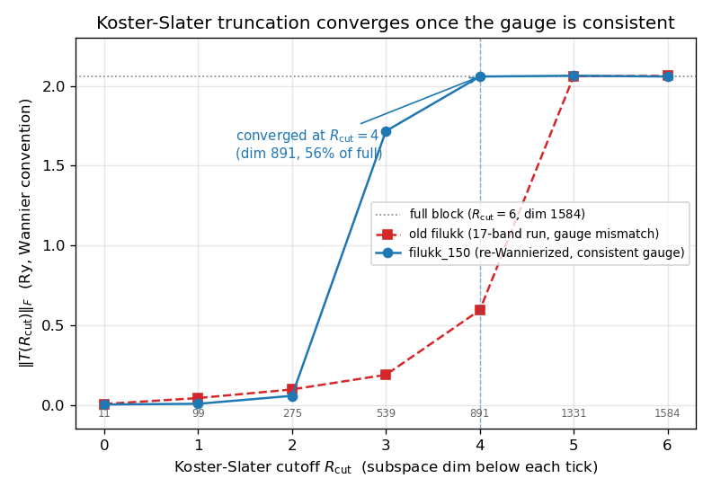
Figure 21. Koster–Slater truncation $\lVert T(R_{\rm cut})\rVert$ vs the cutoff radius (subspace dimension under each tick). With the gauge-consistent filukk_150 (blue) the inversion converges by $R_{\rm cut}=4$ (dim 891, $\sim56\%$ of the full 1584); with the mismatched gauge (red) it only reaches the full value at the full subspace. The localized $\tilde V^W$ is what makes the truncation effective — the payoff of the gauge fix.
So the neutral S-vacancy potential is short-ranged, as expected — the earlier "flat $\tilde V^W$" was entirely the gauge mismatch, not a supercell-size or range-separation problem. On this coarse $12\times12$ grid the converged subspace ($R_{\rm cut}\!=\!4$) is $\sim56\%$ of the full one; on a finer $k$-grid the fixed $\sim$3–4-cell defect extent becomes a small fraction — which is where the Koster–Slater speed-up pays off. P3 (the $\tilde V$ block) and P5-a ($T_{PP}$ in the Bloch basis) use no Wannier rotation and were unaffected throughout.
The fine-grid T-matrix, realized. The localized $\tilde V^W$ lets the active resummation use a fine host grid while still inverting only the small defect subspace. The host Green's function $G^A_{w'w}(\Delta R;\omega)=\frac1{N_f^2}\sum_{k}e^{2\pi i k\cdot\Delta R}\,[(\omega+i\eta)-H_W(k)]^{-1}$ is Wannier-interpolated on an $N_f\times N_f$ grid (from hr.dat), and $T=[1-\tilde V^W G^A]^{-1}\tilde V^W$ is solved in the 891-dimensional defect subspace ($R_{\rm cut}=4$) — never the full $n_b N_f^2$ ($\approx10^5$ at $N_f=96$). It reproduces the coarse direct inversion at $N_f=12$ and converges by $N_f\approx24$:
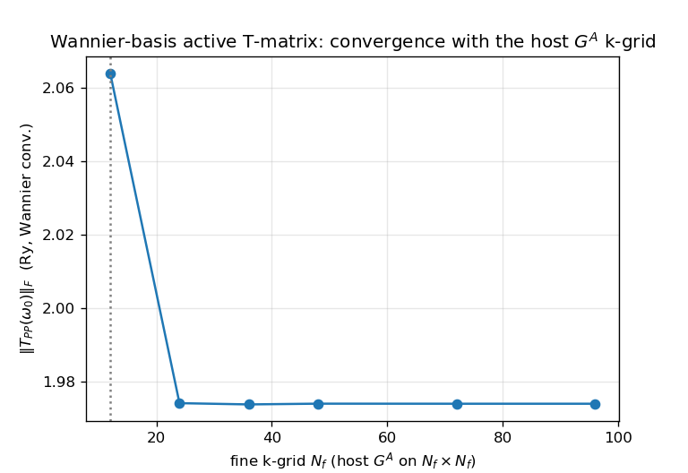
Figure 22. Convergence of the Wannier-basis active T-matrix $\lVert T_{PP}(\omega_0)\rVert$ with the host $G^A$ $k$-grid $N_f$. $N_f=12$ matches the coarse direct inversion (P5-a, $2.064$ Ry); the host converges by $N_f\approx24$ to $1.974$ Ry — the coarse $12\times12$ over-estimated by $\sim4.6\%$ (under-resolved band-edge DOS). The inversion stays $891$-dimensional at every $N_f$ — the payoff of the localized $\tilde V^W$.
5. On the magnitude of $\tilde V$
The Frobenius norm $\lVert\tilde V\rVert_F=100$ Ry can look alarming, but the individual matrix elements are small (RMS $\approx0.06$ Ry, on-site $\tilde V_{nn}\approx-0.12$ Ry): the norm is large only because it root-sum-squares $\sim2.5$ million matrix elements. The raw eigenvalues ($\tilde V\in[-80.6,+26.5]$ Ry, $M$ up to $211$ Ry) are the discrete-basis values; the physical scattering operator carries the BZ measure $1/N_k$ (it enters every $T$-matrix product through $G^A$), so the physical eigenvalues are $\sim\lambda/N_k\approx0.5$–$1.5$ Ry — bounded by $\max|\Delta V|\approx12$ Ry and giving a multiple-scattering parameter $\lVert\tilde V G^A\rVert\sim\mathcal O(1)$ (strong but sensible; the $T$-matrix resummation is essential, possibly resonant). See the $k'$-normalization note.
6. Status and next steps
P0–P3 and P5-a/b are complete and validated (the P5-b gauge consistency is now resolved with a filukk re-Wannierized on the 150-band NSCF). Open items:
- P6 — transport: feed $|T_{PP}(\omega)|^2$ on-shell into the golden-rule rate (replacing EDI's $|M|^2$) for a beyond-Born vs first-Born mobility (uses P5-a directly).
- fine-grid Koster–Slater transport using the gauge-consistent
filukk(P5-b machinery), where the localized $\tilde V^W$ delivers the inversion-size speed-up. - T9 / T5: rest-BZ-grid convergence of $\tilde V$ and Wannier-gauge invariance.
- recover the $e$ defect level. The static single-reference $\omega_0=\varepsilon_{\rm VBM}$ captures the $a_1$ but misses the $e$ doublet (supercell benchmark, Fig. 12); a second static reference $\omega_0'=-4.8$ eV was tested (Fig. 11) and also fails, so the fix is not a shifted reference but the full frequency-dependent $\Sigma_{\rm rest}(\omega)$ and/or a larger active space.